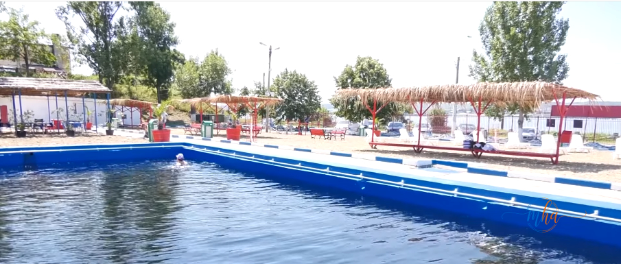
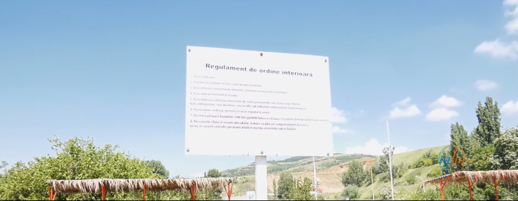

Sezonul estival a început oficial la Drobeta-Turnu Severin, odată cu deschiderea Ștrandului Balnear, unul dintre cele mai îndrăgite locuri de relaxare din municipiu.
„Ștrandul Balnear este un loc de care mulți severineni sunt legați sufletește și mă bucur că îl redeschidem și în acest an. Am pregătit baza de agrement astfel încât oamenii să găsească aici condiții bune pentru relaxare și petrecerea timpului liber. Sperăm să avem parte de o vară frumoasă și de cât mai mulți vizitatori” — Marius Screciu, primarul municipiului Drobeta-Turnu Severin.
Lucrări de întreținere și modernizare, înainte de deschiderea sezonului
Înainte de deschiderea sezonului, au fost efectuate mai multe lucrări de întreținere și pregătire a bazei. Echipele au intervenit pentru curățarea plajelor și a vegetației, înlocuirea elementelor deteriorate din lemn și metal, curățarea și vopsirea bazinelor, recondiționarea mobilierului urban, igienizarea suprafețelor de contact și reparații la grupurile sanitare.

Zona de agrement, după lucrările de igienizare și modernizare | Foto: arhivă
🏊 Program și prețuri — Ștrandul Balnear, sezonul 2026
| Program | Zilnic, între orele 08:00 și 20:00 |
| Preț bilet de intrare | 11 lei |
| Copii până la 10 ani | Acces gratuit |
| Pensionari | Acces gratuit, de luni până joi |
| Administrare | Direcția Administrare Stadioane, Baze Sportive și de Agrement — Primăria Drobeta-Turnu Severin |
Copiii și pensionarii, gratuitate la intrare
Potrivit reprezentanților administrației locale, copiii cu vârsta de până la 10 ani beneficiază de acces gratuit, iar pensionarii vor putea intra gratuit de luni până joi.
„Toate lucrările necesare au fost finalizate la timp”, spune directorul bazei de agrement
Directorul Direcției Administrare Stadioane, Baze Sportive și de Agrement din cadrul Primăriei Municipiului Drobeta-Turnu Severin, Ion Mirescu, spune că toate lucrările necesare pentru deschiderea sezonului au fost finalizate la timp.
„Am pregătit ștrandul astfel încât cei care aleg să își petreacă timpul liber aici să beneficieze de condiții cât mai bune. Au fost realizate lucrări de întreținere, reparații și igienizare în întreaga bază, iar echipele noastre vor continua să monitorizeze permanent starea obiectivului pe parcursul sezonului” — Ion Mirescu, director Direcția Administrare Stadioane, Baze Sportive și de Agrement.

Regulamentul de ordine interioară, afișat la intrarea în bază | Foto: arhivă
Și ștrandul cu apă dulce se va deschide în curând
Reprezentanții administrației locale au anunțat că și ștrandul cu apă dulce din vecinătatea celui balnear va fi deschis în săptămânile viitoare, în funcție de condițiile meteo.
Redeschiderea Ștrandului Balnear marchează, practic, startul oficial al sezonului estival la Drobeta-Turnu Severin, una dintre cele mai așteptate vești ale verii pentru severinenii care vor să își petreacă timpul liber la apă, aproape de casă.